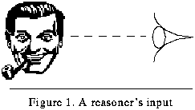
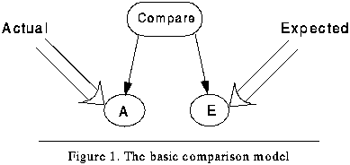
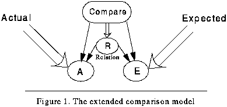
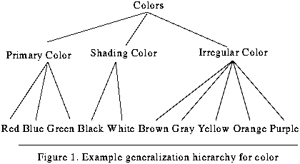

Table of Contents
Table of Contents
 Previous Chapter
Previous Chapter
Table of Contents
Previous Chapter
Failure provides both human and artificial reasoners with strong clues when deciding what needs to be learned (Birnbaum, Collins, Freed & Krulwich, 1990; Cox & Ram, 1994b; Fox & Leake, 1995a; Hammond, 1986; Hayes-Roth, 1983; Kolodner, 1987; Pazzani 1990b; Reason, 1992; Schank, 1982; Schank & Owens, 1987; Sussman, 1975; Stroulia, 1994; VanLehn, 1991b). One of the major goals of establishing a content theory of introspective learning, therefore, is to provide both a general characterization of reasoning failure and the potential causes of such failure in order to discover the nature of these clues. A sufficient characterization of failure will categorize the kinds of cognitively salient symptoms that signal to the reasoner that something worth learning exists. A sufficient taxonomy of the causes of failure will include those factors that account for each symptom in enough detail as to enable learning from them. The learner's task, then, is to perform an explanatory mapping from symptom to fault, and thus, to determine what causes a particular failure. Such explanations detail what needs to be learned by circumscribing the faults that must be corrected. (1)
Failure occurs in sundry ways: a seat belt malfunctions during an automobile crash on a rainy evening; a nuclear power plant experiences an unscheduled release of radioactive gasses; a student solves only 60% of the problems on a physics test correctly; a passage from Dostoyevsky is misinterpreted by a reader; and, like Andrew from the Walnut Cove cartoon (discussed in Chapter I, page 6), people hold incorrect expectations. But given these situations, with what perspective should these examples be best interpreted? That is, should the causes of failure be explained with reference to the external environment and contingencies that bear on the reasoner or with reference to internal factors of the reasoner?
For example, is the reason that a person is injured in a car crash because the seat belt fails or because the driver chose to drive too fast despite the rainy conditions? Do reactor gasses become injected into the environment because of mechanical malfunctions, because of poor design or because of operator failure? The position here is to focus upon failures made by the reasoner and the causes internal to the reasoner, rather than failures caused by external events and devices. Internal causes form the emphasis because this is the location over which the learner has personal control of the situation. It does no good to explain a failure in non-operational terms, if the goal is to improve performance (Owens, 1990b; Ram, 1989; Ram & Leake, 1991); instead, the reasoner must evaluate internal decisions and goals in order to change its mental world in the light of the situation and thereby to avoid repeating the failure indefinitely.(2)
All reasoning failures do not stem from incorrect reasoning, however. Often, it is a lack of attention or reasoning that contributes to mistakes. For instance, Andrew's failure originated in the lack of a mental event; he did not remember it was Sunday. Moreover, he was waiting for a bus that never arrived and so the external manifestation of the failure was unusual; it was the lack of an external event. Failure is not always calculating a wrong solution. Indeed, many of the wrong answers on a student's test may have been marked wrong simply because they were left blank. Thus, errors come in two varieties: errors of commission and errors of omission.
Although past research has developed domain-independent taxonomies of failure (e.g., Kass, 1986, 1990, specifies a taxonomy of failure during explanation and both Hammond, 1989, and Owens, 1990a, report a taxonomy of planning failures), much of this previous work is task dependent. To provide a content theory of introspective learning, this chapter provides a taxonomy of reasoning failure that is both domain independent and, to the greatest extent possible, task independent. After Section 3.1 presents a theoretical model of reasoning based on the generation of expectations, Section 3.2 will analyze the model to exhaustively enumerate the classes of failures implied by the model. Such classes of failure constitute the failure symptoms a reasoner should be able to detect. Given these classes of failures that systems or humans may perceive as symptoms, Section 3.3 taxonomizes the possible factors involved as causes of such classes of failure. The process theory that specifies how a system can map from symptom to fault will be deferred until Chapter VII (Section 6.2, "Blame Assignment: Explaining reasoning failure"). Instead, the current chapter provides a content theory for representing failure symptoms and causes (faults) used in the process theory, while the next chapter provides a formalism for representing this content in declarative structures.
Given an intelligent system, reasoning is performed upon the representation of some input. Unlike the simple characterization depicted in Figure 15, the input is not just perceived, but in addition, an attention mechanism filters the input as determined by the current mental state of the reasoner. The crucial elements of the reasoner's mental state are the goals and the expectations present in the reasoner's memory. The filtered input, along with the reasoner's knowledge, goals and expectations, then determine some interpretation of the input representation causing some additional goals and expectations. These conditions present a rich context from which to detect a failure.
 Figure 15. A reasoner's input
The reasoner is not just interpreting input, either. Rather than passively perceiving objects in the environment, an intelligent agent actively predicts future events surrounding such objects. Moreover, an agent deliberately performs actions in the world. Reasoning functions in support of efforts to understand the world and to achieve goals in the world. But, the world model the reasoner constructs is not confined to the narrow band of the present as determined by the current input; rather, the model spans the events in the immediate past as interpreted by experience and generates expectations of what the world will be like in the immediate and far futures. Expectations enable the reasoner to be prepared for the future. The reasoner can thus avoid anticipated failures by generating contingency plans for them (Hammond, 1986, 1989). From the point of view of learning, however, the most interesting and valuable expectations are those that are violated, because these types of expectations provide the potential for improving the reasoner's anticipate-and-avoid behavior.
Thus, another fundamental purpose of forming expectations is to test the general limits of knowledge, independent of particular goals of the moment. That is, agents generate expectations to improve the boundaries of their knowledge: to retract those parts of the boundaries that are incorrectly extended and to expand the limits where gaps exist. An expectation represents a hypothesis or projection of current knowledge. When the hypothesis is falsified or when the projection is violated, the potential for self-improvement exists. One of the most basic mental functions, therefore, is to compare one's expectations with environmental feedback (or, alternatively, a "mental check" of conclusions). As a simple model of this comparison operation, consider Figure 16. The reasoner calculates some expected outcome and compares it with the actual outcome that constitutes the feedback.
 Figure 16. The basic comparison model
An outcome is defined broadly without reference to a specific task. The expected outcome could be the result of either a problem-solving process or a comprehension process. If it is a problem-solving process, the outcome could be in terms of a solution to a problem specification. For example, a problem may be specified as an operational goal to solve an eight-square puzzle. The solution is thus a series of transformations that end in the goal state. If the problem-solving task is a planning task, the outcome is a plan of actions that will accomplish a goal. If the problem is a design specification, the outcome is the proposed design that will satisfy the design function.
Comprehension processes, on the other hand, attempt to predict and understand events in a stream of input. Therefore, the outcome would be an interpretive understanding of a system's input, such as a reader's text comprehension of successive sentences or an art critic's visual comprehension of a painting. Both text and art can violate the observer's tacit expectations concerning what will be observed. In the drug-bust example from Section 2.1.1 for instance, the Meta-AQUA system implicitly expects dogs to bark at animate objects, even though it did not generate that expectation prior to encountering the sentence containing a dog that barked at luggage. To satisfy the comprehension task in complicated or unusual input, questions may be raised and an explanatory process may be invoked.(3) Hence, the expected outcome will be an explanation (Ram, 1991, 1994; Wilensky, 1983). That is, the reasoner consciously anticipates a certain explanation to be true of some object or event in the input which is to be explained. When these explanations prove incorrect, such as the explanation that the luggage threatened the dog, explicit expectations can be violated as well.
In addition, the specific mental process that forms an expectation (expected outcome) is not determined a priori. The process may be either an inferential process such as deduction, or it may be a memory process that retrieves an expectation from memory. For instance, to understand a story input, the reasoner (reader) may retrieve from memory a schema with which to interpret the story fragment.
Finally, the actual outcome may originate either internally or externally. That is, feedback may come from the environment (via perceptual/interpretive processes, of course), or it may emanate from a mental process such as an arithmetic check of a mathematics computation. In all such cases, the actual outcome is compared with the expected outcome in order to decide whether or not a failure exists in reasoning. If such a failure is detected, the reasoner attempts to explain the failure and to learn from it.
A reasoning failure is defined as an outcome other than what is expected (or a lack of some outcome or appropriate expectation). Such a definition, in light of the basic model above, presents a number of implications. Indeed, a logical matrix can be drawn depending on the values of the expected and actual outcomes. The expected outcome may or may not have been produced; thus, the expected outcome node, E, either exists or does not exist. Also, the actual outcome node, A, may exist or it may not. These values define a truth table as shown in Table 2.
 Table 2: Logical truth table for reasoning model
Table 2: Logical truth table for reasoning model
---------------------------------------------------------------------
expectation exists expectation does not exist
---------------------------------------------------------------------
actual exists Contradiction Impasse
actual does not exist False Degenerate
Expectation (N/A)
---------------------------------------------------------------------
Given this analysis, four basic conditions exist: contradiction, impasse, false expectation, and one degenerate case. The following four subsections will examine each in succession. Subsequent sections will introduce two more failure types (surprise and unexpected success).
If a system incorrectly understands some input, or solves some problem incorrectly, so that its expected interpretation or solution differs from the actual state of affairs (given some criteria or feedback), then a failure has occurred. This is a very conventional notion of failure and will be termed a contradiction. Contradictions are errors of commission since the reasoner generates an specific expectation that is subsequently proved false.
An obvious instance of a contradiction would be for a student to solve a physics problem incorrectly because of incorrect or missing assumptions. As a less obvious example, another student may be told that the infinite series .9999 is equivalent to 1.0 (which is true). The assertion contradicts the student's naïve concept of numbers and the normal expectations arising with regular decimal series. Although this is not an overt error of commission as is the first example, it nonetheless represents the holding of an incorrect belief that contradicts a correct statement. Rather than questioning the statements of the teacher (i.e., the validity of the input), however, the good student will notice the inconsistency, pay closer attention to the lesson, and hopefully, question the validity of the student's own concepts and beliefs.
An impasse is an error of omission defined as either a failure of a process (memory or inferential) to produce any outcome or as the condition under which no process is available to generate an outcome. If a reasoner is baffled when attempting to remember a fact or solve a problem, an impasse is said to have occurred. Andrew's episode of forgetting that it is Sunday is an example of a memory impasse. "Drawing a blank" on a brain-teaser is a problem-solving or inference example of impasse.
In the Soar model of general cognition, the impasse is a pivotal concept. Newell (1990) categorizes four types of impasses within the Soar architecture and enumerates them: tie impasse, no-change impasse, reject impasse, and conflict impasse. Events during Soar's decision cycle lead to each of these cases. For example, a tie impasse results when two or more actions are suggested by productions without preferences for one over the rest. A no-change impasse results when productions do not produce a significant change from the previous decision cycle. Each of these impasses will result in new subgoals to pursue, but are not explicitly considered failures. The taxonomy originates from an exhaustive analysis of the Soar decision cycle and are thus specific to the Soar architecture (or to similar decision control structures). Our impasse failure type is most similar to Soar's no-change impasse. We have not dealt with conflict resolution is any sophisticated way at the current time.
False expectations occur when a reasoner expects an outcome that never occurs or is impossible. For example, a spectator may expect to see the launch of the space shuttle Endeavor while at Cape Canaveral, but engineers abort the launch. The spectator experiences a false expectation (perhaps even depression) when the launch time comes and goes with no takeoff. In the Walnut Cove cartoon, Andrew expects that the bus will come, but it does not. A novice theoretical computer scientist might expect that she has a solution to the "Halting Problem,"(4) not knowing that Turing proved many years ago that no such solution is possible.
The cell marked as degenerate corresponds to the condition where a reasoner has formed a question or problem, has not generated an answer or solution, and has not been provided one by the environment. Despite the fact that a reasoner may consider this condition and dwell on the fact that no progress is being made in the reasoning, the case is not classified as a true failure. Instead, the problem or question is in either the state of active processing or of current suspension. Until either a solution or answer is generated or until one is provided by an external source, the failure cannot be said to have arisen.(5) Failure is detected in response to a comparison or after it is determined that a result is not really possible (i.e., false expectation). Therefore, this case will be considered degenerate in the matrix.
The four cases above are sufficient to cover most of the model of Figure 16 (p. 44) if time is not considered in the equation. However, by considering that the reasoner's expected outcome and the actual outcome (the nodes E and A) may occur in two different orders, a new dimension emerges. A reasoner may determine an expected outcome in advance, or through hindsight given some feedback, may determine that one should have been produced previously. Consider Table 3.
Table 3: Expanded table for reasoning model
---------------------------------------------------------------------------------------------------
expectation exists expectation does not exist; expectation does not exist;
feedback after knowing feedback before knowing
expectation does not exist expectation does not exist
---------------------------------------------------------------------------------------------------
actual exists Contradiction Impasse Surprise
actual does not exist False Degenerate Degenerate
Expectation (N/A) (N/A)
---------------------------------------------------------------------------------------------------
When a system has no explicit expectation, yet an event occurs which should have been expected, then a surprise exists. In these cases, the reasoner considers the node, A, before considering the existence of E; that is, before the reasoner realizes that the expectation, E, should have been generated. Using hindsight, it is up to the reasoner to recognize that there should have been a problem to solve or that the reasoner should have tried to remember to do something.
For example, a robot may never infer that it needs to refuel its vehicle despite the fact that it has viewed the gas gauge steadily drop (example borrowed from Owens, 1991). When it eventually runs out of gasoline, it is able to deduce that the incident stems from earlier failure to formulate the refueling problem and subsequently solve it by planning to obtain the resource.
Finally, if one considers that the comparison operation actually produces a value, then this analysis produces another failure type. The value of the comparison is some relation between the expected outcome, E, and the actual outcome, A. In Figure 17, this relation is marked as the node R. When reasoning is successful, then this value should of course be equality; that is, the relation, R, in Figure 17 should be the "=" value. When reasoning is unsuccessful, this value will be the "<>" value.
 Figure 17. The extended comparison model
Reasoners are able to make predictions about this value (i.e., predict whether they will be successful at a future reasoning task). The normal condition is that all reasoners expect to succeed in their reasoning goals, but this is not always the case. So the expectation may actually be a prediction of that value. To be specific, the reasoner expects the value of E to be something other than A, the actual outcome. Thus, they expect R to be the "<>" value. This condition expands the table a final time, producing Table 4.
Table 4: Final table for reasoning model
---------------------------------------------------------------------------------------------------------------------------
expectation expectation is opposite of expectation does not exist; expectation does not exist;
exists actual; i.e., expects feedback after knowing feedback before knowing
comparison is not-equal expectation does not exist expectation does not exist
relation
---------------------------------------------------------------------------------------------------------------------------
actual exists Contradiction Unexpected Impasse Surprise
Success
actual does not False Degenerate Degenerate Degenerate
exist Expectation (N/A) (N/A) (N/A)
---------------------------------------------------------------------------------------------------------------------------
If a reasoner expects that it will not be able to compute any answer or the correct answer, but it does nonetheless, then another failure class exists called an unexpected success. Reasoner are obviously aware of their comparisons if performed with deliberation, so the reasoner may actually anticipate the accuracy of their predictions. Therefore, if a reasoner expects that the comparison will show inequality, then the reasoner is anticipating that performance will not be successful. That is, the reasoner expects to fail in a future reasoning task, yet succeeds nonetheless.
Although one normally would consider this type of a failure to occur during problem solving or planning, it may also happen during memory performance. Metamemory studies show that humans can predict whether or not they will remember items well. See, for example, the experimental studies of feelings-of-knowing, i.e., judgements of future recognition of an item that was not recalled during some memory test (e.g., Krinsky & Nelson, 1985) and judgements-of-learning, i.e, judgements at rehearsal time as to future memory performance (e.g., Nelson & Dunlosky, 1991). Therefore, an agent may predict that memory will fail on a given item when, in practice, retrieval succeeds. Like the representation of contradiction, the agent expects one outcome (failure), yet another occurs (success) during an unexpected successes.
The purpose of the preceding material is to enumerate the kinds of failure a system should be able to anticipate during reasoning. These types of failures (contradiction, impasse, false expectation, surprise, and unexpected success) constitute the salient features during reasoning that an intelligent should be able to detect and then explain. Here we enumerate the types of causes from which a system has to choose when constructing such explanations of reasoning failure. The task of explaining failure is to map members of one taxonomy (failure symptoms) to members of another (failure faults or causes).
To organize the possible sources of reasoning failure, it is again necessary to consider reasoning in terms of general assumptions. Clearly, reasoning is intentional and thus, oriented toward the pursuit of specific goal states. Moreover, we assume that reasoning uses knowledge to process perceived input from the environment in order to create a representational state of the world and to achieve these desired goals. Reasoning processes transform specific mental states into new mental states. Some of these states are knowledge states representing facts and experience, some are perceived states representing conditions in the external environment, and some are goal states representing desired new states in the environment. Based upon such representations, reasoning produces decisions that result in actions that change the world, thus producing new environmental states that can subsequently be input or perceived by the reasoner in order to compare the goal to the actual state of affairs in the world. Such decisions result in new internal actions that may change the expectations present in working memory that bias later input. Given these assumptions, reasoning will fail if any of the constituents of reasoning fail; that is, if a problem exists with the reasoner's knowledge, goals, mental processes, or input from the environment.
In addition, not only can these components be a likely cause of error, but the ways in which the reasoner selects them can also be a source of error. Non-selection is an important and often overlooked factor in the analysis of failure. It is a result of poor memory organization rather than incorrect memory content. That is, failure can occur, not because an agent does not know some fact, but because the agent cannot retrieve the fact when needed.
Computer memory is sometimes viewed as a virtually error-free medium in which retrieval of data is performed by simple fetch operations. As computer memories grow, however, brute-force search for the address to perform the fetch becomes increasingly intractable. Memory indexing is added in order to make memory retrieval more efficient. A memory-indexing mechanism is a trade-off between time to search and accuracy of retrieval; although efficiency is gained, indexing schemes risk not finding the proper information. That is, given some query, a computer may not find or be able to select a knowledge item, a suspended goal, or a reasoning strategy at all _ from the user's point of view, it can "forget."
The indexing problem (Domeshek, 1992; Kolodner, 1984, 1993; Owens, 1993; Schank, 1982; Schank & Osgood, 1990) is that of choosing cues, or features in an input, to be used as indexes for retrieving from memory the knowledge structures necessary to process an input. The converse problem, is the problem of forgetting (Cox & Ram, 1992a). If the cues are not chosen with care during retrieval time, or if the indexes are not chosen well during encoding, the reasoner may not recall a memory structure when it is needed. The forgetting problem is to reorganize memory and the indexes by which memory is accessed. Because reasoning failures may occur due to faulty memory organization, as well as because of faulty reasoning components or faulty knowledge, the selection or retrieval of knowledge plays an important role in the determining of cause of failure.
Table 5, "Detailed taxonomy of causes of reasoning failure," presents a matrix for relating the causal factors that bear on the determination of blame. As indicated at the heading in the uppermost row, the table is divided into four major causal categories. Failure could stem from the knowledge states with which the reasoner makes decisions, goal states generated during reasoning, the reasoning processes used to achieve the goals, or the input that represents the environment and from which feedback is provided. In each of these categories, the relevant item may be either missing or wrong.(6) That is, omission errors occur when a necessary component is not present (this is represented by the "Absent" row in the table); whereas, commission errors occur when an incorrect component is present (this is represented by the "Wrong" row in the table). In addition, because knowledge is imbedded in a memory and must be retrieved before it can be used to pursue a goal, an error of omission can result from non-selection, rather than simply nonexistence. If an item is correct, then that category contributes nothing to the failure.(7)
For each dimension represented by a column in the table, a general characterization of it also exists in the last table row. These will be explained as entries in the table are discussed. The subtable suggests that similar causal factors are attributable to perceived agents (see Section 3.3.6). Although Table 5 organizes many factors in a coherent fashion, the task of identifying which of the factors are responsible for blame is clearly a complex one, especially when multiple causes exist.
For three of the columns: domain knowledge; goal generation; and processing strategy, a natural dualism is present in their interpretation. For example, strategies represent both mental and physical actions. Thus, there exist mental actions such as operators for mental arithmetic (e.g., integrate by parts in the calculus domain of the LEX program; see Mitchell, Utgoff, & Banerji, 1983) as well as physical actions like robot navigation schemas (e.g., avoid-static-obstacle; see Arkin, 1987). For each type of action, associated heuristics are used by a reasoner to choose when to apply the action. In a similar fashion, there is a physical and mental manifestation of goals and domain theories. Thus, an agent can have mental reasoning goals, such as "remember where I parked the car," and can also have goals to achieve states in the world, like "be at my car's location."(8) Likewise an intelligent agent can have knowledge about the world as well as self-knowledge. Although these nuances are important distinctions to observe, as discussed earlier, the primary treatment presented here will concentrate on internal mental factors rather than external causes.
Despite the focus on the deliberative and top-down components of thought, rather than the data-driven or situation-specific factors, we cannot deny that bottom-up factors affect both reasoning and learning. As a research strategy, however, external factors will be minimized or ignored to provide scope and focus. Such a position is consistent with traditional cognitive science perspectives (see arguments in support of this position by Gardner, 1987; Hayes, Ford & Agnew, 1994; and Newell & Simon, 1972), although the emphasis is indeed at odds with some recent stances, such as the situated cognition paradigm (e.g., Clancey, 1991; Suchman, 1987).
The remaining material of Section 3.3 will examine each of the four major categories in some depth, and provide examples of how failure can result from them. The first section on knowledge states is the longest, but much of the discussion will also apply to aspects of the remaining sections. The final subsection will also provide constraints upon the causal factors that assist in making the task of blame assignment more tractable. The chapter will close with a brief summary.
The domain knowledge of a system represents its theory of the objects, relations, and actions in the domain. This theory consists of facts and propositions in some declarative representation regarding the entities in the domain (i.e, its semantic knowledge of the domain) and some record of the events that have occurred during its experience with the domain (i.e., its episodic knowledge of the domain). In addition, since knowledge is maintained in memory, retrieval or selection of knowledge can also contribute to failure.
The most basic type of failure occurs when the system's domain knowledge is at fault. A domain theory presents the rules, concepts, and relations involved in a particular self-contained knowledge system. For example, the classic cup-domain (Mitchell, Keller, & Kedar-Cabelli, 1986; Winston, Binford, Katz, & Lowry, 1983) provides inference rules used to identify household objects in the cup category (e.g., cup <-- stable & liftable & open-vessel; stable <-- has-bottom & flat-bottom).
A domain theory is considered incomplete(9) if pieces of the knowledge base are missing. Therefore, a novel situation represents an error of omission such that a reasoner has no knowledge with which to interpret some input or with which to solve some problem. In rule-based systems incompleteness occurs when a rule or an antecedent of a rule is missing, while frame-based systems are incomplete when concepts or attributes of concepts are missing.
Alternatively, a domain theory is considered incorrect if there are pieces of the knowledge base present that should not be. Incorrect domain knowledge is an error of commission occurring when incorrect knowledge erroneously biases an interpretation of some input or when incorrect knowledge is used to make faulty inferences in problem-solving. In rule-based systems this occurs when an extra rule or antecedent of a rule is present, while frame-based systems are inconsistent when concepts or attributes are present that should not be.
Rule-based domain theories are overly specific when they are missing some rules or when they possess extra antecedents (in a frame system, this entails missing concept types or extra preconditions or constraints). Such theories are overly specific because either the inclusion of a missing rule or the deletion of an extra antecedent would include previously rejected positive examples. Domain theories are overly general when they are missing antecedents or when they possess extra rules (in a frame system, this entails missing preconditions or extra types). Such theories are overly general because either the deletion of an extra rule or the inclusion of a missing antecedent would reject an example that is mistakenly included in the concept (Mooney & Ourston, 1994).
In the drug-bust scenario (Section 2.1), Meta-AQUA's dog-bark concept is overly specific because it possess a constraint that the object of the action is animate. In effect, it states that dogs bark only at animate objects. By the classification of Table 5, this condition is termed incorrect domain knowledge.
(define-frame dog-bark (isa (value (event))) (actor (default (dog))) (object (constraint (animate-object))) ...)
As a result, the input token (a dog barking at a piece of luggage) is rejected as a member of the dog-bark type and considered anomalous. Actually the system should have accepted the input example as a member of the dog-barks concept; however, the concept was overly specific because of the constraint on the object slot. A contradiction was the result. If Meta-AQUA used a rule-based domain theory, then this error would be caused by an extra antecedent such as in the following Horn-clause rule.
(1) dog-barks <-- actor=dog & object=animate
The important point to consider here is that the error type is implementation independent. The taxonomy of causal factors in reasoning failure depends on neither a frame-based nor a rule-based representation.
Because the knowledge of any non-trivial domain is extensive, exhaustive search is usually computationally prohibitive. In response, many knowledge bases are organized by associative indexes that link particular cues in the contexts with relevant knowledge. A failure may therefore occur, not because relevant knowledge does not exist for the reasoner, but rather, because the knowledge cannot be selected from memory due to poor indexing. Thus, a missing association will cause an error of omission (the correct memory element will not be retrieved), whereas an erroneous association will cause an error of commission (the wrong memory element will be retrieved).
Note that every erroneous association necessarily implies a missing association; that is, if a system retrieves an incorrect memory item, it must be the case that it did not retrieve the correct item. If the proper index had existed, then the correct item would have been retrieved. Therefore, the correct index must have been missing.(10)
Like domain theories, indexes can also be overly general and overly specific. Consider that two ways exist in which one can think of indexing errors. Say the following attribute values exist: Red, blue, green, black, white, brown, gray, yellow, orange, and purple (see Figure 18). Assume also that red, blue and green are the primary colors; black and white are the shading colors; and the rest are the irregular colors.
 Figure 18. Example generalization hierarchy for color
Now a memory item, M, indexed by the shading colors could either be of the two representational forms below.
That is, either the above two indexes (2 and 3) can represent the association, or the index below (4) can.
Index 4 is a generalized index and equivalent to the previous two simple indexes. In addition, suppose that an indexed explanation exists that asserts red and blue composes to the color purple. This explanation, E, might then be indexed by the following three indexes:
(7) Purple --> E
Retrieval failures may now occur in a number of ways. If, instead of Index 5 and Index 6, the index Primary_Color --> E exists in their place, then this index is overly general. The explanation, E, will be brought to bear at inappropriate times. Such a condition is equivalent to the erroneous association, Green --> E, being added to the existing indexes. On the other hand, if Index 2 is missing, then Index 3 is must be overly specific when retrieving the memory item M (i.e., Index 3 should really be Index 4). Therefore, a missing association is equivalent to an overly specific index because it does not match the cues in the context at retrieval time.(11)
As another illustration, consider the second example in the drug-bust scenario from Chapter II (Section 2.1.2). In this episode Meta-AQUA forgets the earlier constructed explanation that the dog barks when detecting contraband; that is, an impasse is reached when no explanation come to mind. The reason for the impasse is that the explanation had earlier been indexed by dogs barking at containers, which is overly specific when in the new context of a dog barking at a laundry pile.
Goals are distinguished knowledge states that focus the reasoning and provide the reasoner with a specific target state to achieve. They represent the desires or intentional states held by a system. If a reasoner fails to generate an appropriate goal or subgoal, or if the reasoner generates an inappropriate (sub)goal, then reasoning will not likely succeed. System resources will be expended on tasks not likely to provide progress in the profitable directions. In addition, if the reasoner cannot immediately achieve a goal, the goal may be suspended and indexed in memory with the hope that an opportunity may arise with which to achieve the goal in the future. As is the case with normal knowledge states, such suspended goals are subject to retrieval failure, if they are not indexed in such a way as to correspond to the contexts within which opportunities await.
One may object to this taxonomic category on the grounds that a goal is just another knowledge state and not any different when explaining failure. For example, a fact may exist in the knowledge base that a particular terrorist was convicted. In addition, a prosecuting attorney may have the goal to achieve the state of another terrorist being convicted. One might argue that very little difference exists in the structure of the two pieces of knowledge. However, major differences exist, not just with the semantics of each, but with the actions a system performs in response to each. When a system determines the cause of its failure is that it had an incorrect goal, then it must continue the blame assignment to determine why it posted such a goal; whereas, if the system determines that the reason it fails is due to some specific knowledge, then this is often sufficient for the blame assignment task.(12)
In goal-driven intelligent systems, two obvious causes of failure are that the correct goal was not generated and that the wrong goal was generated (Owens, 1990b, 1991). If a problem exists in an agent's world, then the reasoner should detect it and generate a goal to solve it. But, if the problem is never detected, the goal will not be generated. This cause of failure is called a missing goal. If, on the other hand, a goal is generated to solve a problem that is not actually a problem, then the cause of failing to solve it is called a poor goal.(13)
Goals are also generated during a comprehension task to more fully understand those inputs which are anomalous or otherwise interesting. Such understanding goals seek to explain the particular input state by creating causally connected links to prior states and events in the input stream. Therefore, a missing goal can be a failure to detect an anomalous input state and a poor goal can be incorrectly characterizing an input state as anomalous when not. Subsequent goals may thus be misguided.
Often we need to look for why the goal was not spawned or why the wrong one was spawned by looking at the knowledge, so a relation between these categories exist. Note that goals are members of the FK (except when suspended), whereas knowledge is stored in the BK.
Unfortunately, even the most appropriate goals cannot always be pursued at the moment they are generated. Sometimes the resources or knowledge necessary for goal pursuit are not available to the reasoner, and so the reasoner must wait until the resources become available. Rather than wait indefinitely, an opportunistic reasoner (Birnbaum & Collins, 1984; Hammond, 1988; Hammond, Converse, Marks & Seifert, 1993; Hayes-Roth & Hayes-Roth, 1979; Ram, 1989; Simina & Kolodner, 1995) will suspend blocked goals, store them in memory, and pursue other goals until the time the resources are present.(14) Therefore, as with any item stored in memory, suspended goals may not be retrieved or selected at the moment they are needed by the reasoner. Goals, like domain knowledge, are subject to the problem of forgetting when the indexes created at storage time do not match the cues present in the context at retrieval time.
A forgotten goal is a suspended goal that was not retrieved from memory at the appropriate time (this cause is equivalent to a missing association). Alternatively, a failure is caused by a poor selection when the goal selected from memory is inappropriate given the current context (this cause is equivalent to an erroneous association). As with the knowledge selection category, if an inappropriate goal is selected, then it must be the case that the appropriate goal was not selected (i.e., poor selection implies forgotten goal).
As an example of a forgotten goal, a member of an audience listening to a lecture may want to ask a question of the speaker. Instead of interrupting the speaker, the listener may decide to wait until the end of the lecture. After all, the speaker may answer the question in the remainder of the presentation. However, at the end of the presentation, the listener may not remember to ask the question, if it was not already answered. The cues available at the end of the lecture may not be sufficient for retrieving the question from memory.(15)
The process column considers those factors in reasoning which produce mental actions and transformations of knowledge. That is, it considers the soundness of the reasoning itself. The choice of which reasoning strategy to use in a given situation is a matter of control of mental action. In many AI systems (e.g., PRODIGY, Minton, 1988), the control is by mean of some heuristic rules or triggering mechanisms.
With respect to humans, Reder (1987) has shown that after reading a story, human subjects use different strategies to answer questions posed about the story and vary the strategies used depending on existing conditions such as the time from reading the story to asking the question. In some cases, a person will use a direct memory retrieval method while at other times a person will infer a plausible answer based upon related facts. Moreover, her report also supports the existence of a specific strategy-selection stage of question answering that automatically evaluates the knowledge relevant to the question and then deliberately decides on a strategy. Siegler (1988) has reported similar strategy choices with respect to addition, subtraction, and reading skills in children.
Candidate reasoning processes can be either fine-grained (e.g., a problem-solving operator) or large-grained (e.g., a reasoning paradigm such as means-ends analysis). A relation between domain knowledge and the processing strategy column is that an error could be a missing precondition in an operator rather than a missing operator itself.
If a process is incorrect by the inclusion of some faulty rule, rule antecedent, assertion, precondition, or incorrect sequencing of operators, then the error of commission is termed a flawed behavior. If, on the other hand, a reasoning process is missing a rule, rule antecedent, assertion, or precondition, then the failure is called a missing behavior. For example, a failure may be due to an agent lacking a specific skill to achieve a goal.
For processing strategies the organization is captured by heuristic rules that link applicability conditions with some operator or process. Reasoning strategies are applied only if they are selected using some heuristic that determines they are applicable. Thus, the heuristics can be thought of as "indexes." So, as with the other selection columns considered so far, a failure may occur, not because the reasoner does not have the strategy with which to process the input, but rather because it does not have the specific heuristic to signal the strategy's applicability, or because another heuristic selects a competitive strategy.
A failure that happens due to non-selection of a given process is an error of commission called a missing heuristic. Alternatively, if a process is chosen by mistake, then the flawed heuristic error of commission is said to have occurred. As with previous selection failures, if the wrong process has been chosen, then it must be the case that the correct process has not been selected; that is, a flawed heuristic implies a missing heuristic.
For example, the kinds of explanations that Meta-AQUA may produce are determined by the methods of explanation as well as the knowledge in its BK. During the reading of the drug-bust story, if Meta-AQUA had decided to use case-based reasoning rather than XP application, the explanation of why the dog barked at the luggage may have been sufficiently different.
The most complex column is the one representing the input to the system from its environment. The major distinctions in this dimension are between perception (or what is input from the environment) and attention (what is selected for further processing by the reasoner from the perceived input).
The input to a system constitutes the interface between the internal world (cognition) and the external world (environment). As suggested by the sub-table, if one allows interaction with other agents in the world, then there may be blame associated with the goals, strategies, input and knowledge of other agents. Thus, for example, noise in the input may actually be due to deception by opponents caused by conflicting goals of the external agent. This makes blame assignment exceedingly difficult. However if one is to categorize an open world, this source of blame must be acknowledged. The input column is most interesting if one considers that there exists an input, the perception of the input, and the interpretation of the perception of the input. However, for the purposes of brevity and focus, the treatment in the following sections will often ignore such distinctions, concentrating on the analysis of the main table alone.
Noise is considered a fault if a piece of the input from the environment is incorrect. It is perhaps unusual to consider this failure as an error of commission since the reasoner may not have caused the noise. However, it is useful to think of the error as being committed by the environment itself (e.g., faulty data-collection equipment). Missing input is an error of omission by the environment such that some critical piece of information is not present in the perceiver's environmental context.
As an example of noise, an agent may be told that a deceased individual came back to life (which is false). Because the input contradicts the firm belief in people's mortality, the input should be questioned. In this case the agent may question the validity of the statement because it contradicts a firm expectation. However, unlike faulty equipment that may cause noise in an input, this example is intentional.(16)
Unlike the errors discussed in the immediately preceding subsection, the errors of input selection are errors attributable to the reasoner, not the environment itself. The lack of attention to proper element in the input stream can cause reasoning to go astray. A error of omission is therefore called a missing context; whereas, an error of commission is incorrect context. Again, like previous selection columns, an incorrect context implies a missing context.
Unlike the other selection columns, however, the causal factors represented by input selection are not memory organization problems; rather, they are attentional mechanisms (possibly related to goals and expectations). An error may occur, not because there is not a requisite piece of information in the perceptual field (i.e., input) of an agent, but rather, because the agent does not focus on the information or consider it properly.
In summary, failures can be caused by either knowledge states, goal states, processes, or by environmental input. In each case, a distinction exists between the component being at fault or the selection of the component being at fault. Furthermore, in each of these eight categories, the item may be either wrong or missing. The result is sixteen causes of failure that may explain reasoning error, plus combinations of each.
Although the table of reasoning failure causes (Table 5 on page 53) is complex, the number of possible explanatory combinations generated from the table is not the full permutation of the number of cells in the table. Some conjunctions are not possible because a number of invariants and constraints exist within the table. Five are listed below.
It is not possible to have an error of commission without also having an error of omission in all of the selection categories. This has been discussed in the previous subsections on selection.
These constraints on the combinations of causal values assist a system when attempting to map from failure symptom to explanatory fault.
This chapter described a general model of expectation-driven reasoning, extracted from the model a set of failure types or symptoms, and then constructed a taxonomy of causal factors that can explain individual reasoning failures from this derived set. Given this model of reasoning, we claimed that a learner must be sensitive to the symptoms of contradiction, impasse, false expectation, surprise, and unexpected success. When explaining such failure symptoms, a learner must be sensitive to the knowledge it used, the goals it pursued, the process with which it reasoned, and the environment within which the reasoning was oriented. Such taxonomies of failure symptoms and faults do not originate from an ad hoc compilation of everyday mistakes with a post hoc generalization over this list (i.e., a kind of "list and induce" method); rather, they stem from a reasoned analysis of ideal models of intelligent performance. This method of developing content-theory taxonomies represents an improvement over previous intuitive methods of analysis. One can challenge the taxonomy (or compare it with others) by examining either the assumptions or the analyses of the model. Without such arguments, a comparison of alternate lists of examples or categories is meaningless.
Along the way, individual sections presented a number of examples from real-life, from artificial domains, and from the Meta-AQUA implementation to argue in support of these basic results. The reasoning model is specific to neither domain nor task and contains no unreasonable assumptions. Therefore, the set of failure types derived from the model represents a testable hypothesis from which experimental methods may determine the reasonableness of the model. Although this dissertation will not attempt to test this hypothesis with human subjects, the following chapter will put forward functional justifications for why these categories are useful in computational systems. Chapter IX will support the hypothesis with empirical results from computational studies rather than psychological methods.(17) See Chapter X, FUTURE RESEARCH (Section 10.1.7, "Failure Types as a Cognitive Category"), however, for speculation as to a possible inquiries that may be made in conjunction with experimental psychologists.
This chapter has provided the theoretical constructs that support a theory of introspective multistrategy learning. Because the theory chiefly concerns learning, the concentration of analysis has been on how performance systems can fail and what constitutes the causes of such failure. Only through an analysis of such features can a system be developed which can learn to avoid such failures. This chapter has therefore described the content of the theory from which the following chapter will give a concrete vocabulary and representation.
Table of Contents
 Next Chapter
Next Chapter